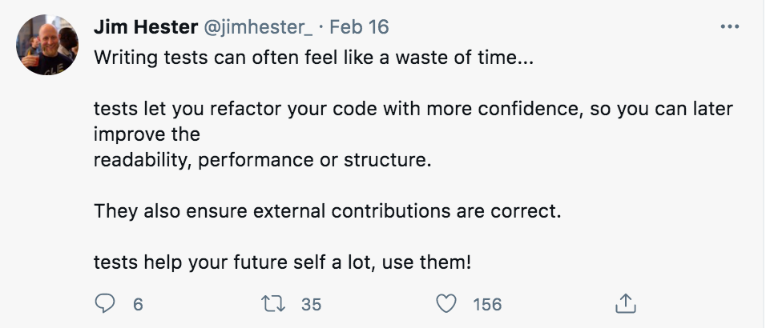

Course Announcements
Due Dates
A5 due Friday of week 10 (12/3)
Final exam/project due Mon of Finals week (12/6; 11:59 PM)
Final Exam will be released Friday afternoon of week 10
No class, office hours or coding lab next Wed-Friday (we DO have class Monday)
Q&A
Q: Why didn’t you not introduce code styling as the quarter went by? Do you think student will struggle less? It’s simple but just a curios question :)
A: It’s a good question! It’s all about focus and cognitive load. There’s a lot to focus on when first learning to code, and so I try not to overburden students by making them learn syntax and worry about code style in the beginning. So while I model good code style, I don’t explicitly require/enforce it. But, the order is something I consider changing every quarter. Maybe I’ll flip it around next quarter and see if students struggle any more (hopefully not!)
Q: I really enjoy and appreciate your teaching style so just wondering if you plan to go back to campus and teach cogs 108 & cogs 137 in 2022 fall or 2023.
A: Thanks for the kind words. I’ll be on parental leave this Spring and Fall. Next Winter (2023) I’m currently scheduled to teach COGS 108 (this could change…but likely won’t) and next Spring (2023) I’m scheduled to teach COGS 9 and COGs 18.
Q: A5, Q7: What does “smaller” means in the question two?
A: A “smaller” subset would be a DataFrame that had all the same columns but fewer rows.
Q: Regarding the listing of imports, how will we know if we are importing from the standard library? Do we have to know/memorize a list of standard library imports?
A: While you’ll learn these over time, this isn’t something we’ll be grading on the final exam/project. However, generally, external packages have to be installed prior to you using them. So, if you have to install it (pip install --user package), you know it’s not part of the standard library.
Q: I’m curious if there are other code styles than PEP8 used for python.
A: Lots of people have their own style guides (whether explicitly written down or not) and certain companies specify their own style, PEP8 is certainly the most commonly-accepted guide for python.
Q: Should we use a space in between between print and the parenthesis?
A: No.
Q: Will we be able to ask you if you could look over our code on the project before turning it in and see if it has the most readable/condensed code?
A: Kind of. In office hours, we can take a look and give suggestions for improvement, but we won’t have time for everyone to submit their entire project and provide feedback to everyone.
Q: I am curious about variable names. How can we come up with adequate variable names for functions and classes?
A: Here, there is lots of freedom. Just be sure that whatever name you come up with is somewhwat meaningful for what is being stored in the variable. For example m is a bad variable name…b/c I have no idea what m stores. But, measurements, my_measurements, measure, and measure_stored would all be possible/acceptable variable names for something that stored measurements.
Q: What exactly does “out-of-date” comments mean? Like comments we had written but no longer apply after we figured out our code/finished the code?
A: Yup! “out-of-date” means comments that are no longer true about the code they’re describing (typically b/c you changed your code after initial brainstorming/in editing process).
Q: Is it okay to leave too much space between codes?
A: There’s a balance here. If you have an extra line between every line of code…that’s too much, as it makes your code less readable.
Q: Can you give a quick guideline for how to use Anaconda?
A: Yup, I’ll do this soon!
Q: do we use self only if there is an init ?
A: You use it then, but also if you want to refer to a class attribute within a method.
Q: On our final or project we need to comment on code, what exactly do we say about the code, what it does or then main function of a collection line of codes?
A: We’ll discuss this today!
Code Testing¶
smoke tests
unit tests
pytest
Writing Good Code¶
All in all, write code that is:
Well organized (follows a style guide)
Tested
Documented
And you will have understandable, maintainable, and trustable code.
Clicker Question #1¶
Given the following code, which assert will fail?
list.copy?
def extend(input_arg):
output = input_arg.copy()
for element in input_arg:
output.append(element)
return output
# test here
extend([1, 2])
[1, 2, 1, 2]
A)
assert isinstance(extend([1, 2]), list)B)
assert extend([1, 2]) == [1, 2, 1, 2]C)
assert extend((1, 2)) == (1, 2, 1, 2)D)
assert extend(['a', 'b', 'c']) == ['a', 'b', 'c', 'a', 'b', 'c']E)
assert extend([]) == []
Clicker Question - Asserts¶
# Check that extend returns a list
assert isinstance(extend([1, 2]), list)
# Check that an input list returns the expected result
assert extend([1, 2]) == [1, 2, 1, 2]
# Check if the function works on tuples
assert extend((1, 2)) == (1, 2, 1, 2)
---------------------------------------------------------------------------
AttributeError Traceback (most recent call last)
<ipython-input-5-c510c0c20682> in <module>
1 # Check if the function works on tuples
----> 2 assert extend((1, 2)) == (1, 2, 1, 2)
<ipython-input-1-a3ca5f93bd43> in extend(input_arg)
1 def extend(input_arg):
----> 2 output = input_arg.copy()
3 for element in input_arg:
4 output.append(element)
5 return output
AttributeError: 'tuple' object has no attribute 'copy'
# Check that a different input list (different lengths / contents) returns expected result
assert extend(['a', 'b', 'c']) == ['a', 'b', 'c', 'a', 'b', 'c']
# Check that an empty list executes, executing an empty list
assert extend([]) == []
Code Testing¶
Levels of Code Testing:¶
Smoke Tests
Unit Tests
Integration Tests
System Tests
Four general types¶
Smoke tests - preliminary tests to basic functionality; checks if something runs (but not necessarily if it does the right thing) (gut check)
Unit tests - test functions & objects to ensure that they code is behaving as expected
Integration tests - tests functions, classes & modules interacting
System tests - tests end-to-end behavior
Unit Tests¶
one test for each “piece” of your code (each function, each class, each module, etc)
passes silently if true
error if it fails
consider “edge cases”
help you resist the urge to assume computers will act how you think it will work
functions used with pytest start with
test_
Why Write Tests¶
To ensure code does what it is supposed to
To have a system for checking things when you change things in the code
Tests, when run, help identify code that will give an error if something has gone wrong.
The Best (Laziest) Argument for Writing Tests¶
Whenever you write new code, you will find yourself using little snippets of code to check it.
Collect these snippets into a test function, and you get re-runnable tests for free.

Source: https://twitter.com/jimhester_/status/1361697676832739328
How to Write Tests¶
Given a function or class you want to test:
You need to have an expectation for what it should do
Write out some example cases, with known answers
Use
assertto check that your example cases do run as expectedCollect these examples into test functions, stored in test files
Example Test Code¶
What function should do: write a function add that adds two inputs together
# things I think should be true
add(2, 2) == 4
add(-2, -2) == -4
add(2.7, 1.2) == 3.9
add(2, 0) == 2
---------------------------------------------------------------------------
NameError Traceback (most recent call last)
<ipython-input-9-38ddbf3506fa> in <module>
1 # things I think should be true
----> 2 add(2, 2) == 4
3 add(-2, -2) == -4
4 add(2.7, 1.2) == 3.9
5 add(2, 0) == 2
NameError: name 'add' is not defined
import math
def test_add():
"""Tests for the `add` function."""
# Test adding positve numbers
assert add(2, 2) == 4
# Test adding negative numbers
assert add(-2, -2) == -4
# Test adding floats
# assert add(2.7, 1.2) == 3.9
assert math.isclose(add(2.7, 1.2), 3.9)
# Test adding with 0
assert add(2, 0) == 2
def add(num1, num2):
return num1 + num2
add(2.7, 1.2)
3.9000000000000004
# Run our test function
test_add()
Clicker Question #2¶
If you were asked to write a function remove_punctuation that removed all the punctuation from a given input string…what are some things that would be True of the output of that function?
A) I’ve got some ideas!
B) I tried but I’m stuck.
C) I’m lost/don’t understand what we’re supposed to be doing.
Brainstorm here…
output type is correct:
type(remove_punctation('Hello!')) == strif execute function on a string, output string would have punctuation removed (
remove_punctation('Hello!') == 'Hello')test other positions for punctuation
test other punctuation marks
# assert statements here
assert type(remove_punctuation('Hello!')) == str
assert remove_punctuation('Hello!') == 'Hello'
assert remove_punctuation('&He@llo!') == 'Hello'
# test function here
def test_remove_punctuation():
assert isinstance(remove_punctuation('Hello!'), str)
assert type(remove_punctuation('Hello!')) == str
assert remove_punctuation('Hello!') == 'Hello'
assert remove_punctuation('&He@llo!') == 'Hello'
# function here
import string
def remove_punctuation(input_string):
output_string = ''
for val in input_string:
if val not in string.punctuation:
output_string += val
return output_string
test_remove_punctuation()
Clicker Question #3¶
# Given the following function:
def divide_list(in_list):
output = []
for el1, el2 in zip(in_list[1:], in_list[0:-1]):
output.append(el1 / el2)
return output
# And the following test function:
def test_divide_list():
assert callable(divide_list)
assert isinstance(divide_list([1, 2]), list)
assert divide_list([1, 2, 4]) == [2, 2]
test_divide_list()
A) These tests will pass, and this function is well tested
B) These tests will pass, but this function needs more tests
C) These tests will fail, but they cover the needed cases
D) These tests will fail, and we should also have more tests
divide_list((0,2,3))
---------------------------------------------------------------------------
ZeroDivisionError Traceback (most recent call last)
<ipython-input-33-c91f35be7f5f> in <module>
----> 1 divide_list((0,2,3))
<ipython-input-30-1f783ab343a3> in divide_list(in_list)
4
5 for el1, el2 in zip(in_list[1:], in_list[0:-1]):
----> 6 output.append(el1 / el2)
7
8 return output
ZeroDivisionError: division by zero
Test Driven Development¶
Test Driven Development¶
Ensures you go into writing code with a good plan / outline
Ensures that you have a test suite, as you can not decide to neglect test code after the fact
Note: when you complete (or at least write) assignments for this class, you are effectively doing test-driven development
Test Coverage¶
Clicker Question #4¶
Write a test function that checks the following piece of code:
A) I did it!
B) I think I did it!
C) I’m lost.
Thought process:
Define test function
def test_...make
assertion within the test functioncheck that the function is callable
check the output is expected output / expected type
check that function sums the list (which was our expectation)
def sum_list(input_list):
"""add all values in a list - return sum"""
output = 0
for val in input_list:
output += val
return output
### YOUR TEST
def test_sum_list():
assert callable(sum_list)
assert type(sum_list([3, 4, 2])) == int
assert sum_list([3, 4, 2]) == 9
test_sum_list()
### POSSIBLE TEST
def test_sum_list():
# write multiple asserts
assert callable(sum_list)
assert isinstance(sum_list([1, 2, 3, 4]), int)
assert sum_list([1, 2, 3, 4]) == 10
test_sum_list()
PyTest¶
pytest¶
check if error raised when expected to be raised
autorun all of your tests
formal testing to your code/projects
Executing pytest¶
Look for any file called
test_...If everything works, silently moves along.
For anything that fails, will alert you.
Available from Anaconda and on datahub
!pytest test_my_module.py
============================= test session starts ==============================
platform darwin -- Python 3.9.5, pytest-6.2.5, py-1.11.0, pluggy-1.0.0
rootdir: /Users/shannonellis/Desktop/Teaching/COGS18/LectureNotes-COGS18
plugins: anyio-3.3.0
collected 1 item
test_my_module.py . [100%]
============================== 1 passed in 0.01s ===============================